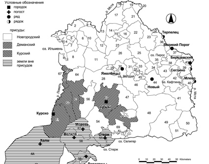
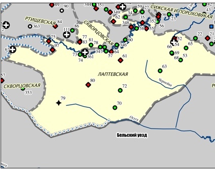
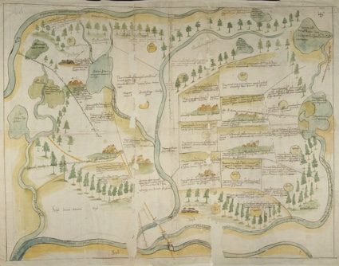
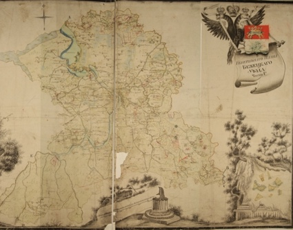
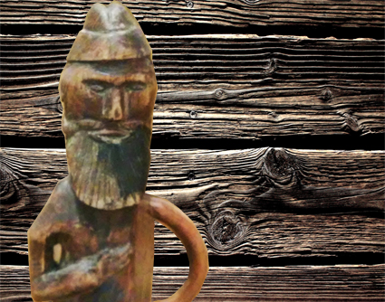
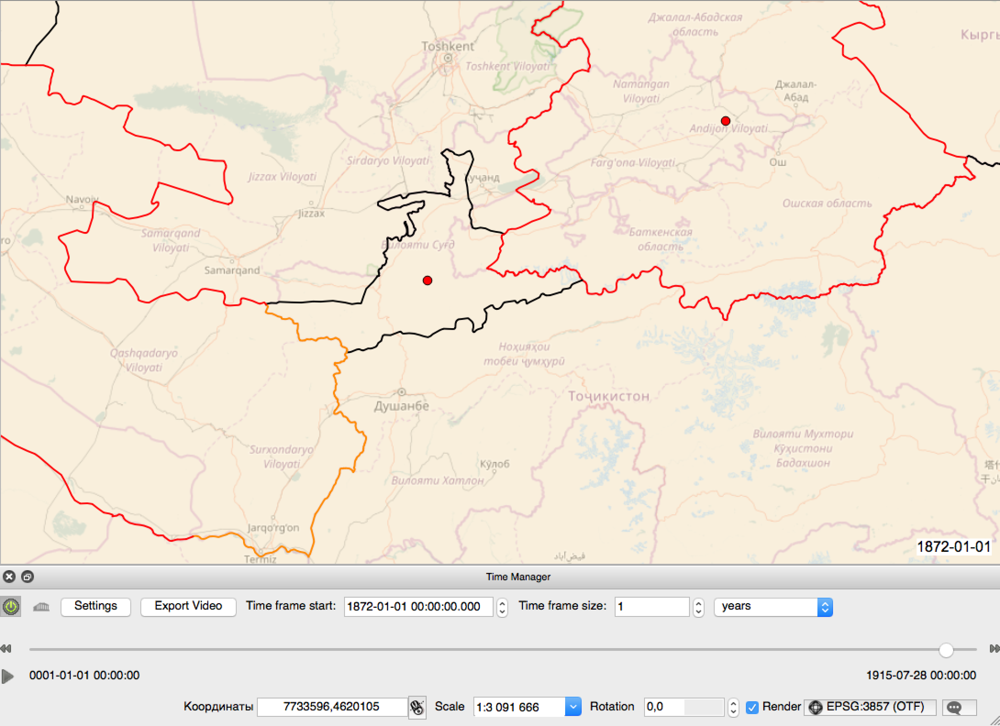
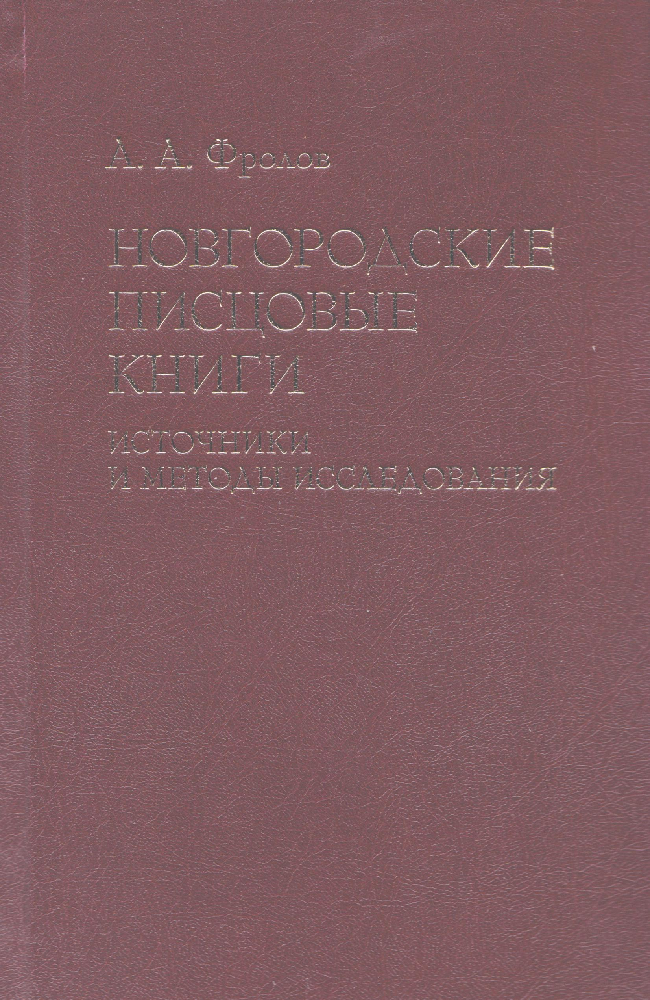

ГИС «Исторический атлас Деревской пятины по писцовой книге письма 1495-1496 гг.
ГИС «Ржева Володимерова по приправочной писцовой книге 1588-1589 гг. (князь Дмитрия Ивановича половина)"

Веб-ГИС «Чертежи Русского государства XVI-XVII вв.»
Веб-ГИС «Источники по исторической географии Бежецкого Верха»
ГИС "Тверские карелы в XVII-XIX вв."

ГИС "Тверской уезд в XVI в."

Веб-ГИС “Динамическая карта России”. Разработка концепции

Геоуказатель к монографии А.А. Фролова
Связаться с нами
admin@histgeo.ru